“[...] as Fazendas sertanejas são Reinos, os fazendeiros são Reis, Condes ou Barões, e as histórias são cheias de Princesas, cavaleiros, filhas de fazendeiros e Cangaceiros, tudo misturado!”
SUASSUNA, Ariano. Romance d’A Pedra do Reino e o príncipe do sangue do vai-e-volta. São Paulo: Círculo do Livro, 1987. p. 297.
Introdução
O que podem representar essas pessoas montadas em cavalos, segurando bandeiras?
Em que lugar você diria que essa foto foi tirada?
O trecho do texto do escritor Ariano Suassuna menciona reinos e reis. O que você sabe sobre reis, príncipes e princesas que tenham governado nosso país?
Objetivos
Descobrir que a Idade Média influenciou a cultura e a arte brasileiras.
Conhecer manifestações artísticas populares, como o cordel.
Perceber que tradições teatrais de origem medieval ainda se fazem presentes.
Produzir imagens inspiradas nas iluminogravuras de Ariano Suassuna.
Reino de Suassuna
Em uma divisão histórica tradicional, considera-se que a Idade Média já havia terminado quando os colonizadores portugueses chegaram ao Brasil, em 1500. Esse já seria o período do Renascimento. Entretanto, estudiosos defendem que
vários elementos da cultura medieval ainda estavam presentes nos costumes dos portugueses e de outros imigrantes europeus que desembarcaram no país.
Essa influência ainda é marcante na cultura e nas artes brasileiras. A obra de Ariano Suassuna é um exemplo disso.
Ariano Suassuna (1927-2014)
Nascido em João Pessoa, Paraíba, mas radicado em Recife, Pernambuco, Ariano Suassuna foi um artista multimídia. Escritor, dramaturgo e artista visual, também organizou conjuntos musicais e de dança. Como professor,
dava aulas-espetáculo, falando sobre assuntos culturais. Desde criança foi muito influenciado por manifestações artísticas populares, como o bumba meu boi, o teatro de mamulengo e o universo do cordel. Quando adulto, criou obras que
valorizaram a cultura brasileira, sobretudo a nordestina. Imortal da Academia Brasileira de Letras, recebeu vários prêmios por seus textos, que foram traduzidos para vários idiomas.
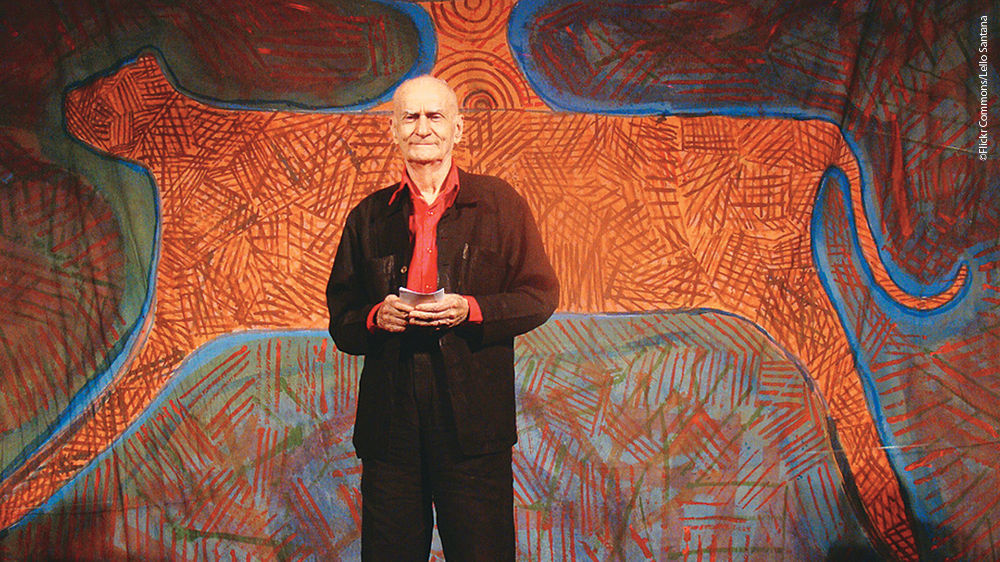
O próprio Suassuna criava as ilustrações de seus livros, assim como pinturas, gravuras e murais.
ApreciArte
Observe uma página de um dos mais conhecidos livros de orações do século XV, intitulado As belas horas de Jean da França. Ele foi produzido por três artistas holandeses: os irmãos Herman, Paul e Jean de Limbourg.
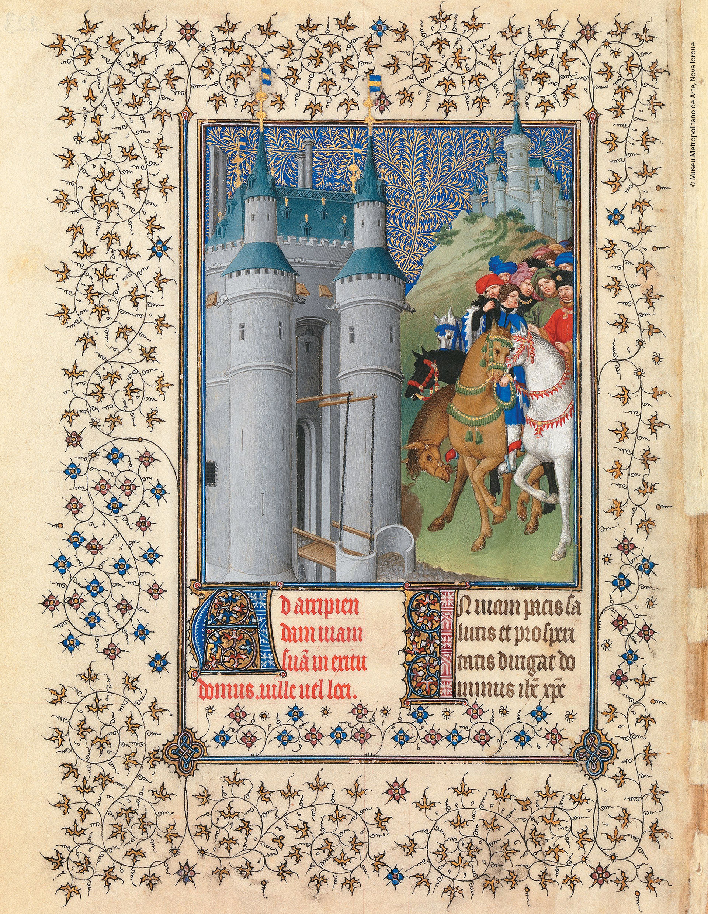
LIMBOURG, Herman de; LIMBOURG, Paul de; LIMBOURG, Jean de. As belas horas de Jean da França, O duque em sua jornada. [ca. 1405-1409]. 1 têmpera sobre folha de ouro em velo, 23,8 cm × 16,8 cm. Museu Metropolitano de
Arte, Nova Iorque.
Toda vez que este ícone aparecer no material, saiba que é hora de sacar seu diário de bordo. Nele, você vai registrar ideias e esboços para sua próxima obra-prima!
Agora, responda: O que a iluminura que você observou tem em comum com a imagem produzida por Ariano Suassuna?
Converse com seus colegas e anote suas observações no diário de bordo.
Casamento entre texto e ilustração
As imagens do livro do século XV são chamadas iluminuras, nome dado à técnica, surgida na Idade Média, de decorar textos religiosos usando letras, desenhos e pinturas especiais. Inicialmente, esses trabalhos eram
feitos à mão por monges que viviam em mosteiros com enormes bibliotecas. Eles eram responsáveis por todas as etapas de confecção de livros – naquela época, não existia imprensa.
Inspirado nas iluminuras, Suassuna criou suas iluminogravuras. Assim como na técnica medieval, o artista reúne texto e imagem, mas utiliza referências do imaginário popular brasileiro. Ele se inspira, por exemplo,
em manifestações artísticas da Pré-História, como as encontradas no estado da Paraíba, onde nasceu.
Em suas iluminogravuras, Suassuna também usa letras inspiradas nos ferros que marcam e identificam o gado no Nordeste. Assim, ele criou um alfabeto chamado “armorial”.
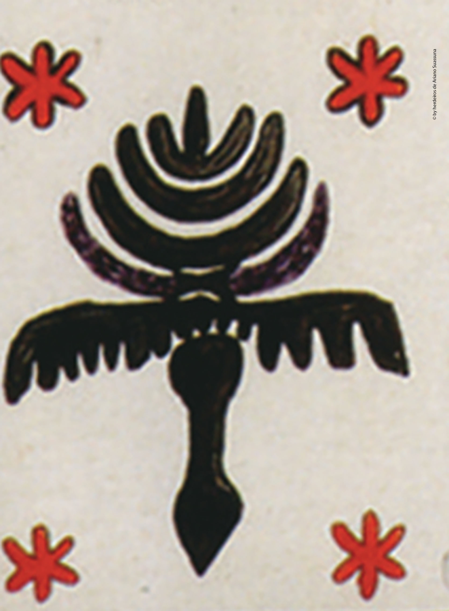
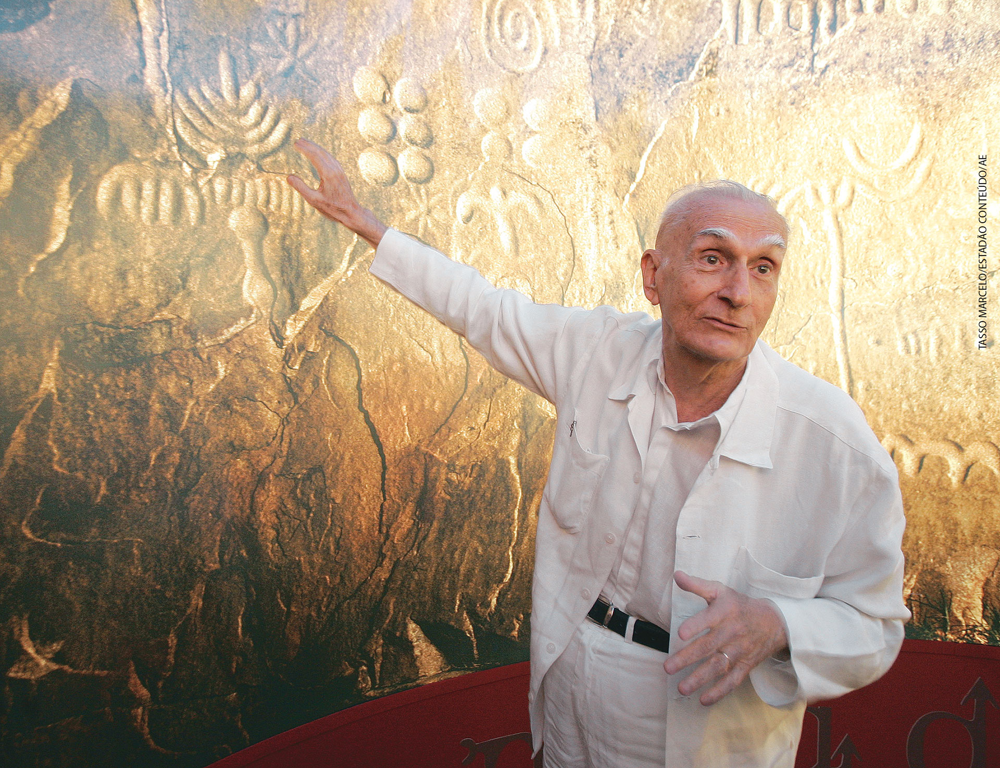
Suassuna aponta para um detalhe da Pedra do Ingá que inspirou uma de suas iluminogravuras (no destaque). Localizada na Paraíba, essa rocha apresenta inscrições gravadas por povos pré-históricos
Universo preso a um cordão
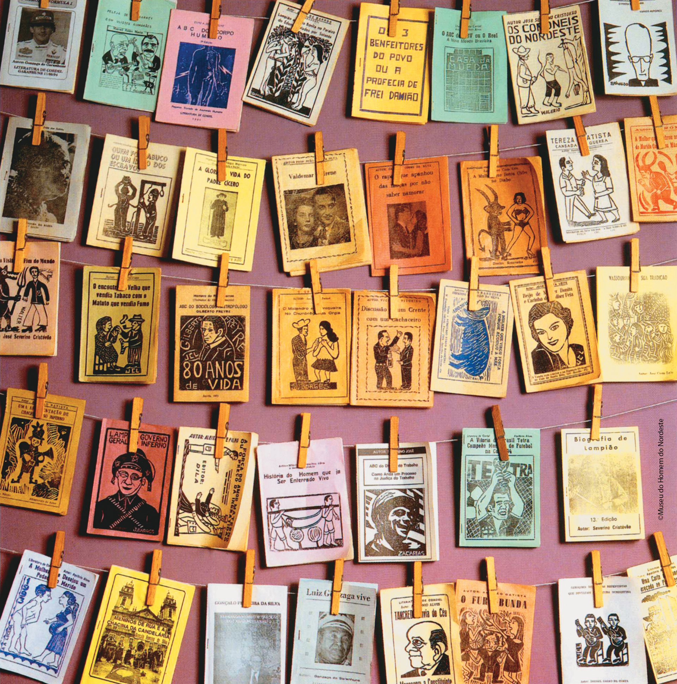
Ainda atualmente, vendedores exibem folhetos de cordel presos em varais com pregadores de roupa.
Outra referência nos trabalhos de Suassana são os livretos de cordel – tradição já difundida em Portugal e na Espanha no século XV e que, nos séculos seguintes, iria se popularizar no Nordeste brasileiro.
Os cordéis são livretos de papel barato com histórias em versos, normalmente vendidos em feiras, presos em cordões (como também eram chamados). Podem ser musicados como faz, por exemplo, o baiano Bule-Bule, mestre da cultura popular,
que escreve e canta em verso suas histórias de cordel. Para isso, ele conta sempre com o acompanhamento de sua viola.
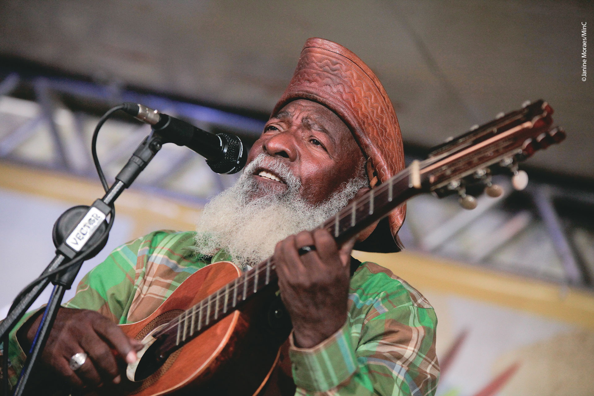
Além de criar histórias de cordel, Bule-Bule também é repentista, isto é, canta versos rimados de improviso – o chamado “repente” – sobre os mais diversos temas.
Para chamar a atenção e vender mais, as publicações de cordel passaram a ter suas capas ilustradas com a técnica de xilogravura. Nessa forma de impressão, o artista esculpe um desenho em um pedaço de madeira e, em
seguida, passa tinta sobre ele. Por fim, coloca a madeira, com a tinta ainda fresca, em contato com a folha de papel como se fosse um carimbo, transferindo o desenho.
Observe a capa de um clássico da literatura de cordel, Romance do pavão misterioso, do paraibano José Camelo de Melo Resende (1885-1964).
Experimente ler em voz alta o início desse livreto:
“Eu vou contar uma história
De um pavão misterioso
Que levantou voo na Grécia
Com um rapaz corajoso
Raptando uma condessa
Filha de um conde orgulhoso.”
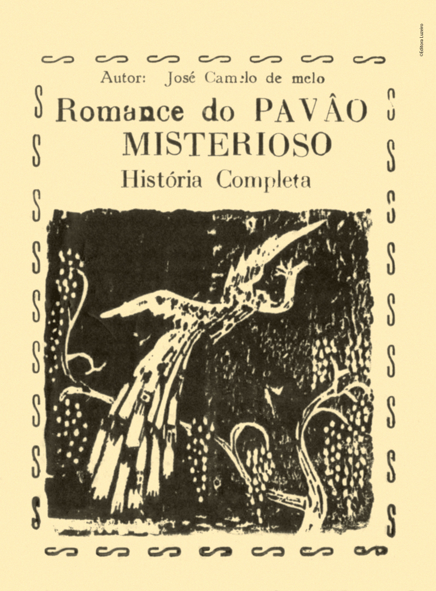
RESENDE, José C. de M. O pavão misterioso. São Paulo: Luzeiro, 1980. p. 3.
O cordel de José Camelo de Melo Resende inspirou diversas obras, como a xilogravura do recifense Gilvan Samico e a famosa música Pavão mysteriozo, do compositor cearense Ednardo, tema de abertura da telenovela Saramandaia, de 1976.
O universo do cordel e da cultura popular do Nordeste era o material de trabalho de Gilvan Samico (1928-2013). Ele criou diversas obras, como essa xilogravura, chamada João, Maria e o pavão azul, de 1960.
Organize as ideias
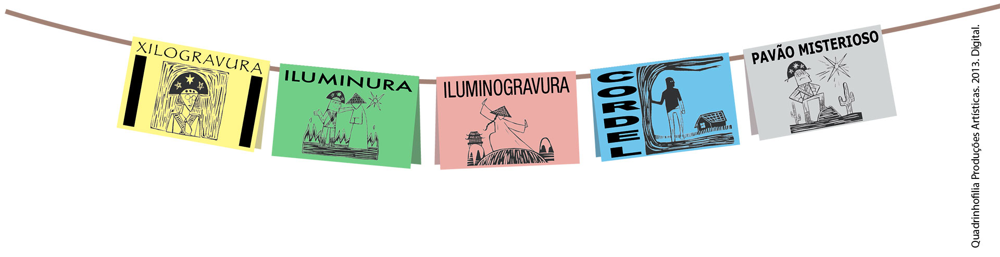
Que tal relembrar alguns conceitos que você já estudou enquanto cria versos como os da literatura de cordel?
Em seu diário de bordo, escreva algumas linhas sobre o que você entendeu dos assuntos que dão nome aos folhetos acima. Depois, experimente reescrever isso com versos rimados.
No exemplo ao lado, o texto ficou com rimas entre o segundo, o quarto e o sexto versos. Você pode usar esse modelo ou experimentar outras formas. Depois, declame suas criações para os colegas!
Pavão misterioso
O pavão misterioso
Encantou a mocidade
Inspirou Gilvan Samico
Homem de sagacidade
Acabou numa novela
Dele todos têm saudade
Atividades
Agora é a sua vez de criar iluminogravuras como as de Ariano Suassuna. Para isso, siga estes passos:
Produza ou selecione um pequeno texto, escrito em versos. É importante que ele inspire você a fazer ilustrações.
Com canetinha preta, escreva-o em uma página em branco e crie símbolos que combinem com ele. Assim como Ariano se inspirou em desenhos ligados ao Nordeste, experimente se inspirar em símbolos de sua região.
Após produzir alguns esboços, esforce-se para criar uma versão definitiva. Ela servirá de matriz, isto é, de fonte para reproduções em fotocopiadoras.
Em cada cópia, experimente colorir elementos do desenho com tinta guache. Tente deixar algumas partes sem pintura, destacando, assim, porções brancas do papel e eventuais porções pretas que você tenha pintado inicialmente com a
canetinha.
João Grilo e Chicó: uma dupla atrapalhada
No circo, é comum encontrarmos uma dupla de palhaços for- mada pelo tipo “branco”, que se acha mais esperto que o outro, e o “augusto”, que faz papel de tonto. Figuras assim estão presentes na peça Auto da Compadecida,
de Ariano Suassuna, uma das mais populares do teatro brasileiro.
Na peça, João Grilo e Chicó são dois amigos que vivem em meio à pobreza do Sertão nordestino e se envolvem em diversas confusões para ganhar dinheiro. Mais astuto, João se comporta como o palhaço branco, enquanto Chicó, que adora
inventar mentiras, faz o tipo augusto. Segundo Suassuna, essa dupla atrapalhada também tem muito a ver com a dupla de palhaços Mateus e Bastião, presente no bumba meu boi, e com a dupla de personagens Dom Quixote e
Sancho Pança, criada
pelo espanhol Miguel de Cervantes.
DicionArte
bumba meu boi: manifestação da cultura popular brasileira que envolve teatro, música e dança. Apesar de receber nomes diferentes em cada região (por exemplo: boi-bumbá, no Amazonas; cavalo-marinho, na Paraíba e em
Pernambuco; boi de
mamão, no Paraná e em Santa Catarina) e de apresentar variações em seus personagens, a morte e a ressurreição de um boi estão sempre presentes no enredo.
Cineminha
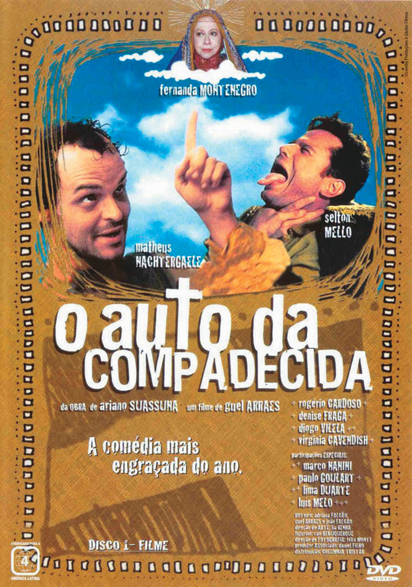
O AUTO DA COMPADECIDA
Direção: Guel Arraes
Gênero: Comédia
Ano de lançamento: 2000
Duração: 1 h 44 min
País: Brasil
Sinopse: A peça Auto da Compadecida virou minissérie de TV em 1999 e, no ano seguinte, foi transformada em filme. Na adaptação cinematográfica, há referências a outras peças de Ariano Suassuna, como O
santo e a
porca e Torturas de um coração. Há também personagens que não existiam no texto do dramaturgo, como a jovem Rosinha, apaixonada por Chicó.
Com ótimas interpretações de Matheus Nachtergaele, Selton Mello, Fernanda Montenegro, Marco Nanini, Denise Fraga e Luís Melo, o filme transmite bem o humor e a inteligência do texto original.
Céu e inferno no palco
Ao escrever Auto da Compadecida, em 1955, inspirado em folhetos de cordel, Suassuna também se aproveitou de referências do teatro medieval. Aliás, a palavra “auto” era usada na Idade Média para se referir a
encenações de trechos da Bíblia.
Nesse período da história, o teatro esteve profundamente ligado à religião católica. Assim, diversas peças tratavam direta ou indiretamente da vida e dos ensinamentos de Jesus Cristo.
Em Auto da Compadecida, Jesus, chamado de “Manuel” (abreviação de Emanuel, nome bíblico que significa “Deus conosco”), surge na última parte da peça para julgar os pecados de João Grilo e outros personagens mortos por
cangaceiros. Nessa espécie de tribunal, o Diabo, chamado pelo nome de “Encourado”, deseja levá-los para o inferno, enquanto a “Compadecida”, mãe de Jesus, é chamada para defender os pecadores.
Para além da obra de Suassuna, é possível reconhecer a persistência de tradições teatrais medievais em diversos países. No período de Páscoa, por exemplo, muitos grupos encenam a Paixão de Cristo – representação da morte e
ressurreição de Jesus.
Troca de ideias
Em sua cidade, existem grupos que apresentam a Paixão de Cristo? Você já foi assistir? Quem viu pode contar aos outros como são essas apresentações.
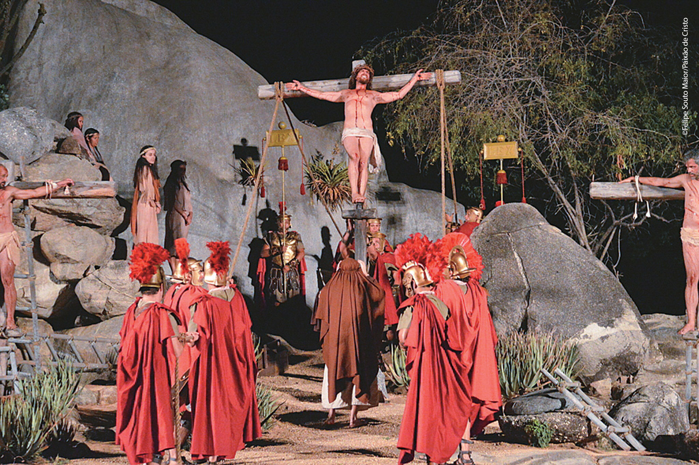
Na cidade-teatro de Nova Jerusalém, Pernambuco, é apresentado o maior espetáculo da Paixão de Cristo do Brasil.
Em Pernambuco, na cidade de Brejo da Madre de Deus, acontece a maior apresentação desse tipo do Brasil, realizada em um teatro a céu aberto, com 100 mil metros quadrados. A dimensão desse espaço, batizado de Nova Jerusalém, equivale a
um terço da antiga Jerusalém bíblica.
A encenação conta com cerca de 450 atores e se desenvolve em nove palcos, que reproduzem cenários naturais, palácios e templos. Um público aproximado de oito mil pessoas assiste ao espetáculo em pé, caminhando por esses locais.
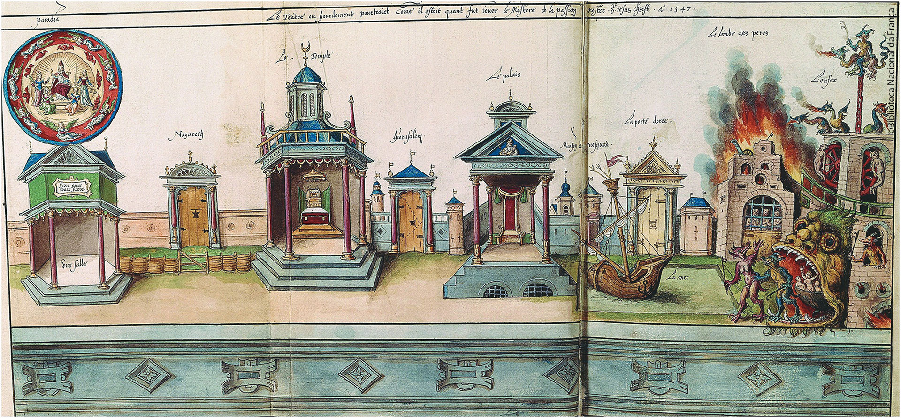
MISTÉRIO da Paixão. 1547. Biblioteca Nacional, Paris.
Essa ilustração de 1547 indica como eram as “estações” visitadas pelo público durante a apresentação do Mistério da Paixão na cidade de Valenciennes, na França. O primeiro cenário, no canto esquerdo, representa o paraíso. No canto
direito está a “boca do inferno”.
Em muitas das manifestações teatrais da Idade Média, personagens e público se movimentavam por espaços ao ar livre. Cenários podiam ser montados em carroças, levadas pelas ruas. Ao público também era possível acompanhar uma peça
caminhando por várias “estações” – locais onde se desenrolavam as encenações.
É interessante observar que o teatro medieval nasce das missas, tendo o interior das igrejas como espaço cênico. Entretanto, aos poucos, as encenações se ampliaram, estendendo-se por praças e ruas. Com isso, elas passaram a envolver,
além dos sacerdotes, várias camadas da população.
Em muitos casos, cada classe de trabalhadores se especializava em uma cena. Por exemplo: os carpinteiros construíam o barco de uma representação da arca de Noé, assim como os padeiros, acostumados a lidar com as chamas do fogo, faziam
cenas da destruição do mundo no Juízo Final.
Bandeira pela união da cultura popular e erudita
Você conhece a expressão “levantar bandeira”? Ela significa defender uma determinada ideia ou causa. No caso do escritor Ariano Suassuna, é possível dizer que ele levantou uma grande bandeira ao fundar, em 1970, o Movimento
Armorial: proposta artística que buscava mesclar tradições populares e a cultura erudita propagada nas universidades e nos conservatórios de arte.
O nome escolhido por Suassuna faz referência a um tipo de livro, chamado “armorial”, que registra os brasões – isto é, os símbolos de famílias, estados e até times de futebol.
Sob a bandeira do movimento armorial, artistas de diversas áreas foram influenciados pelo cordel, a xilogravura, instrumentos como a viola, a rabeca e o pífano, entre outras manifestações culturais tradicionais da Região Nordeste.
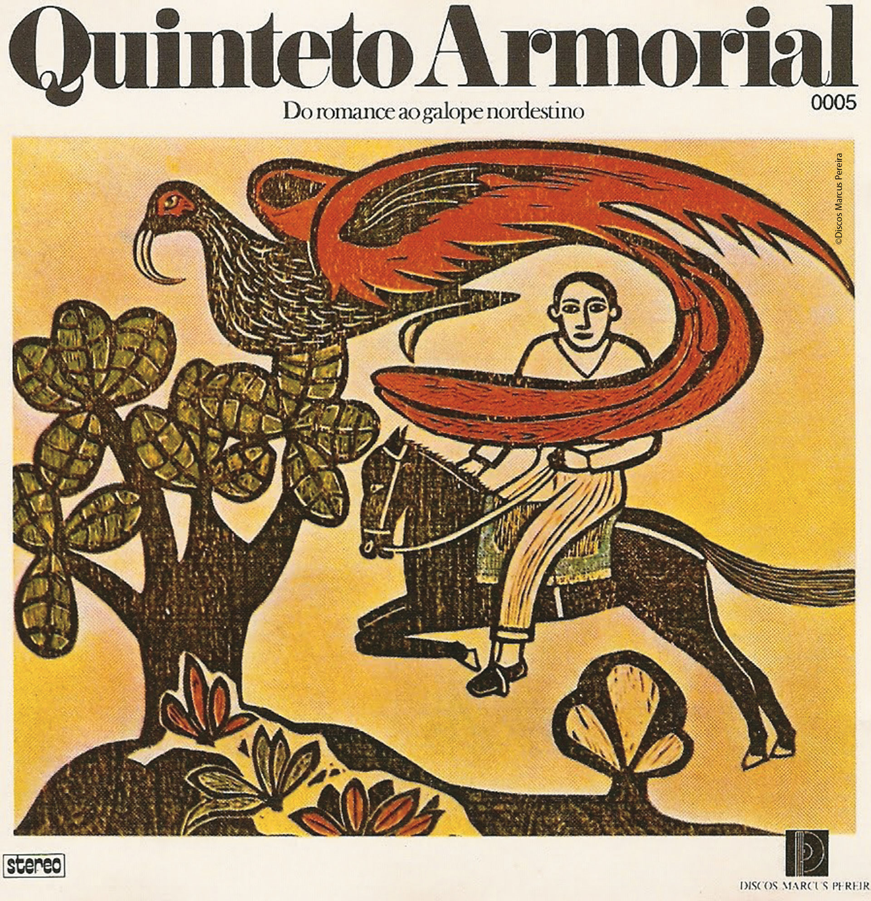
Capa do primeiro disco do Quinteto Armorial, Do romance ao galope nordestino (1974). A imagem é uma gravura do artista “armorial” Gilvan Samico, intitulada Alexandrino e o pássaro de fogo.
Nas artes visuais “armoriais”, as obras de Gilvan Samico tornaram-se referência. Já na música, destaca-se o conjunto Quinteto Armorial. Companhias de dança, como o Balé Popular do Recife e o Grupo Grial de Dança, também foram fundadas
por Ariano Suassuna. A bandeira de seu movimento ainda hoje é defendida pelo multiartista Antonio Nóbrega.
ApreciArte
O grupo Quinteto Armorial foi criado por Ariano Suassuna no contexto do Movimento Armorial e destaca-se por propor uma fusão da música erudita com tradições populares nordestinas e medievais. Uma das bases principais dessa fusão é o
emprego de instrumentos tradicionais dos cantores nordestinos. O disco Do romance ao galope nordestino contém faixas que ilustram muito bem o trabalho desse grupo.
Antonio Nóbrega
O artista pernambucano Antonio Nóbrega transita por diversas linguagens. Além de tocar instrumentos como rabeca, violino e violão, ele canta, dança e faz teatro. Com a entrada no Quinteto Armorial, em 1972, Nóbrega se aproximou das
manifestações da cultura popular brasileira. Desde então, cria espetáculos que incorporam essas tradições. Com Rosane Almeida, dirige, em São Paulo, o Instituto Brincante, espaço que oferece cursos e mostras artísticas.
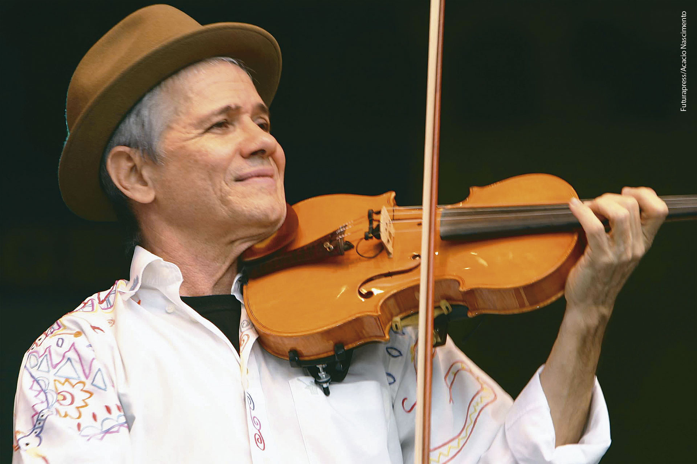
Antonio Nóbrega tocando seu instrumento
A sonoridade da música Revoada nos remete imediatamente ao Nordeste – em especial pela viola sertaneja tocada por Antônio Madureira, que se destaca logo de início.
Já na música Romance da bela infanta, inspirada em um texto português do século XVI, cria-se um clima mais medieval. Nessa faixa, em particular, são usados instrumentos como flauta de pífano, tocada por Egildo
Vieira, e rabeca, tocada
por Antonio Nóbrega, ambos instrumentos populares no Nordeste.
No som do quinteto, é possível ouvir ainda o violão de Edilson Eulálio e o marimbau de Fernando Barbosa. Esse instrumento tem duas cordas apoiadas sobre uma estrutura de madeira. Como em um berimbau, o músico bate nas
cordas usando uma
vareta e, ao mesmo tempo, produz notas musicais variadas ao deslizar um vidro cilíndrico pelas cordas.
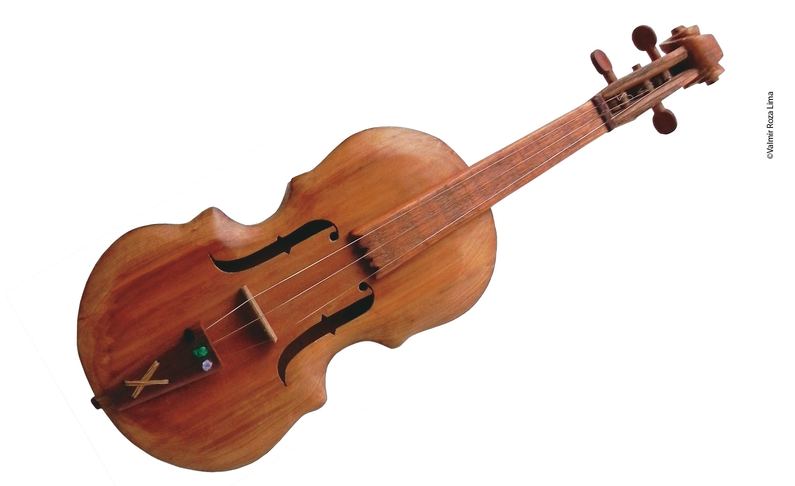
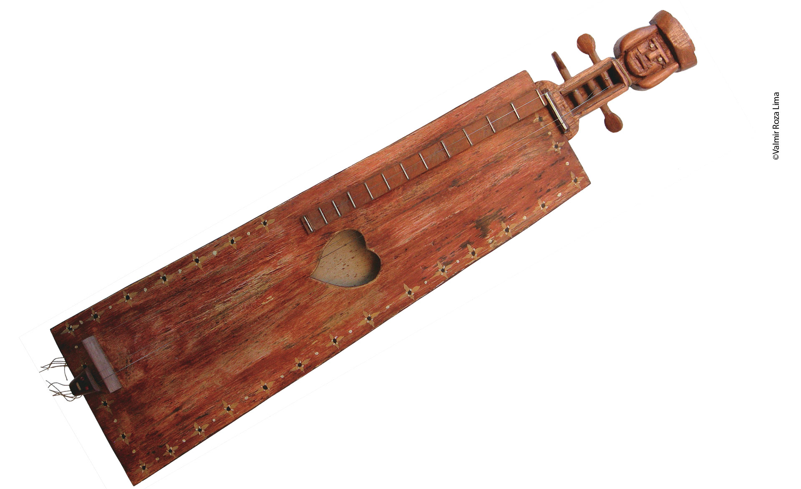
De cima para baixo, flauta de pífano, rabeca e marimbau
Cineminha
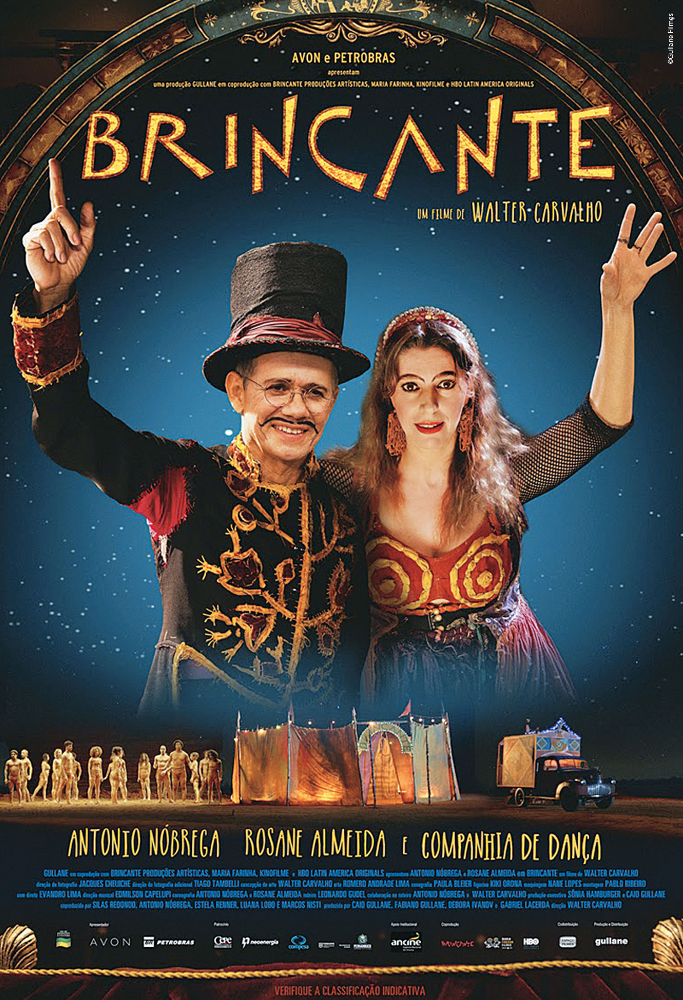
BRINCANTE
Direção: Walter Carvalho
Gênero: Documentário
Ano de lançamento: 2014
Duração: 1 h 32 min
País: Brasil
Sinopse: O filme é uma viagem pelo mundo de Antonio Nóbrega, que é visto atuando em cenas de circo, teatro, dança e música. Ele encarna os personagens cômicos Tonheta e João Sidurino, contracenando com a também
multiartista Rosane Almeida. Vale destacar que o termo “brincante”, título do filme, é usado para nomear os artistas populares que “brincam”, isto é, atuam em manifestações culturais populares brasileiras, como a folia de reis e o
bumba meu boi.
Saiba +
A imagem dos cavaleiros vestidos com roupas medievais, presente na abertura deste capítulo, faz parte do evento Cavalgada à Pedra do Reino, realizado desde 1993, no mês de maio, em São José do Belmonte, Pernambuco. Saiba mais sobre
o assunto lendo o texto a seguir.
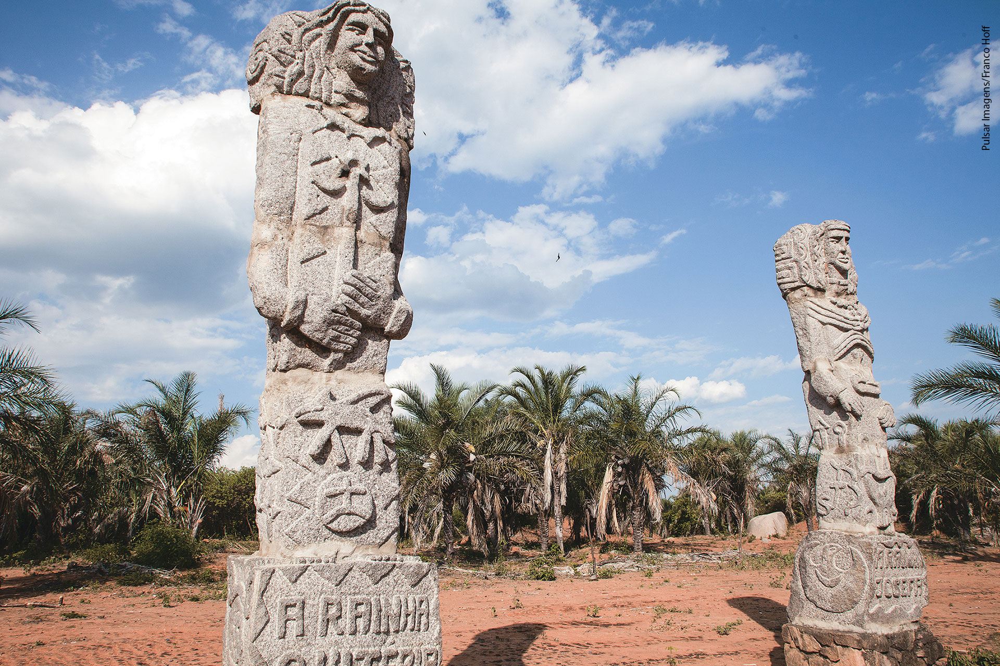
Na Pedra do Reino há um santuário a céu aberto com duas pedras de 30 metros, além de esculturas de santos e personagens do livro Romance d’A Pedra do reino e o príncipe do sangue do vai-e-volta, de
Suassuna.
Cavalgada à Pedra do Reino: da tragédia à recriação artística
Em 1838, dezenas de pessoas foram assassinadas nas rochas da região da Pedra do Reino (antes chamada de Pedra Bonita), em São José do Belmonte, a mando de um louco chamado João Ferreira. Ele e seus seguidores acreditavam que o
sangue derramado ali seria capaz de trazer de volta o rei português Dom Sebastião (1554-1578), desaparecido em uma batalha no Marrocos, em 1578. Logo em seguida, em Portugal e no Brasil espalhou-se a lenda de que ele estava vivo e,
um dia, voltaria para governar.
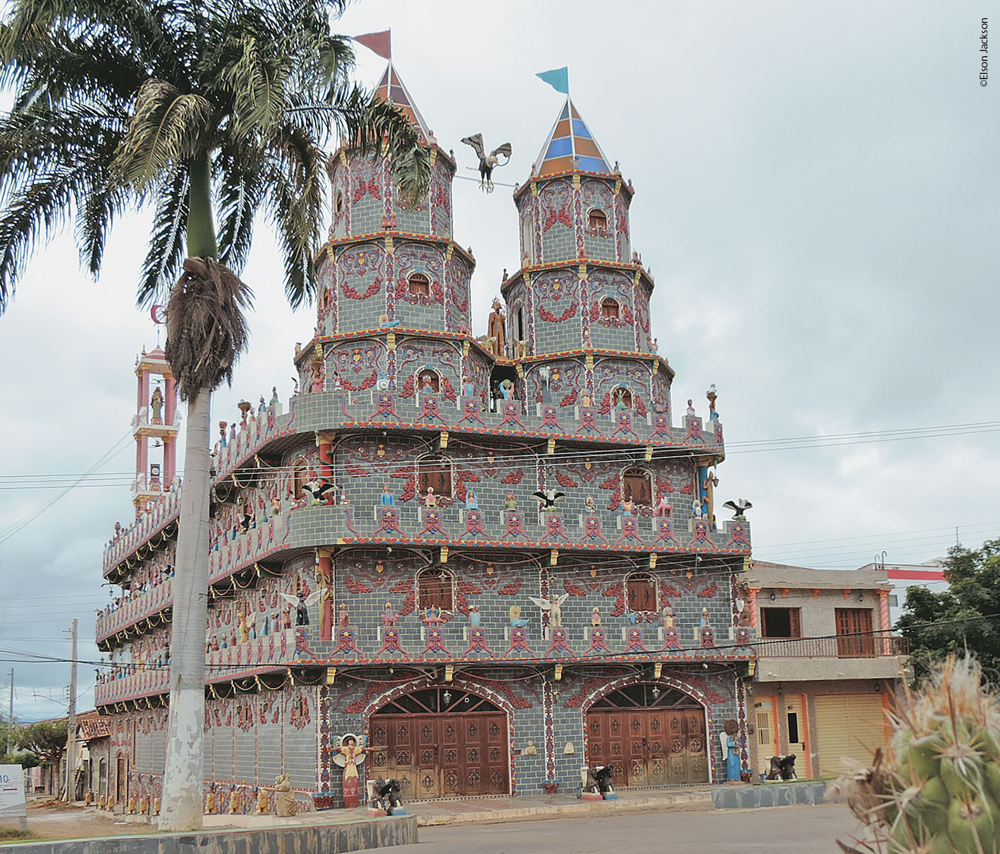
Castelo “armorial” em São José do Belmonte.
Em 1971, Ariano Suassuna publicou o Romance da Pedra do Reino e o príncipe do sangue do vai-e-volta, que usava esses fatos ocorridos em São José do Belmonte como fonte de inspiração. Em 1993, ajudou a idealizar um evento
na cidade para preservar essa história. Foi criada a Cavalgada à Pedra do Reino, com uma série de atividades artísticas e religiosas. Vestidos como cavaleiros medievais, os participantes das cavalhadas encenam combates entre
cristãos e muçulmanos na Idade Média e, depois, cavalgam até o local da tragédia para assistir a uma missa em homenagem aos mortos. Em 2013, foi inaugurado o Castelo Armorial, com uma altura equivalente à de um prédio de seis
andares. Decorado com elementos da cultura popular nordestina, ele é inspirado na estética do Movimento Armorial.
Festival das Artes
O encontro do universo medieval com a cultura brasileira é um tema que pode estar presente em um festival artístico na sua escola. Nesse evento, que tal compartilhar com o público algumas das
atividades desenvolvidas neste livro?
Imagine a animação se os visitantes também entrarem na dança das tarântulas e experimentarem o som do vidrofone! Pense na possibilidade de exibir pinturas e desenhos inspirados nas iluminogravuras de Ariano Suassuna e ainda declamar
alguns versos de cordel.